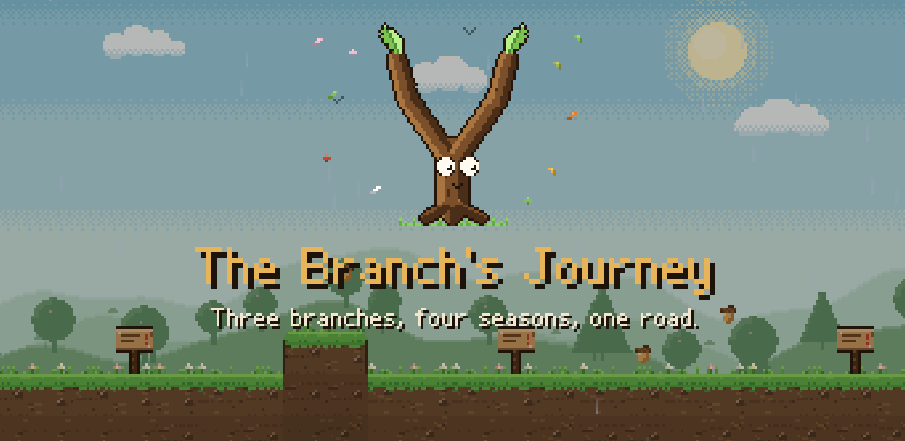

The Branch's Journey
One stormy night three twigs broke off an old oak and tangled into a single little body: Çatal. Guide it through four seasons and 28 stages to find soft soil to take root in. One stick lets you jump, two let you double jump, three let you glide — but the wind keeps tearing them off.
Free to try: all of Spring is free; Summer, Autumn and Winter unlock with a single purchase. Plays offline. No ads, no data collection.
For Android, iPhone and iPad. In English, German and Turkish.
Die Reise des Zweigs: Drei Zweige, vier Jahreszeiten, ein Weg. Der Frühling ist gratis, Sommer, Herbst und Winter schaltest du mit einem einmaligen Kauf frei. Keine Werbung, keine Datenerfassung.
Dalın Yolculuğu: Üç dal, dört mevsim, tek bir yol. İlkbahar ücretsiz; Yaz, Sonbahar ve Kış tek seferlik satın almayla açılır. Reklam yok, veri toplama yok.